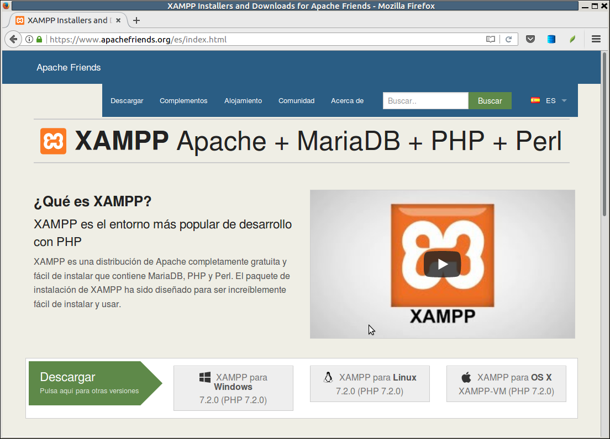
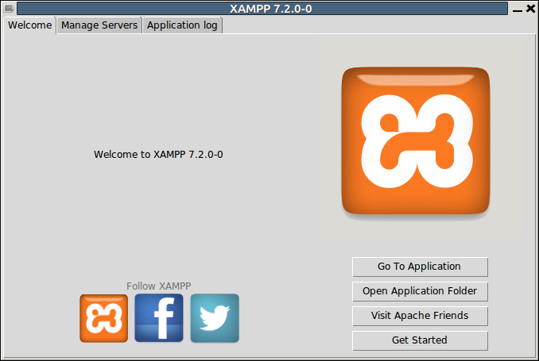
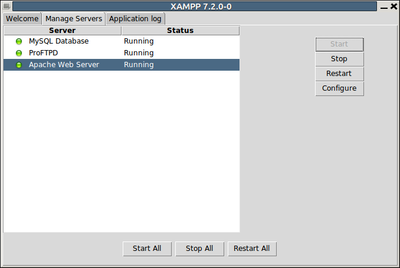

2.- Instal·ació del Servidor Web i el Servidor de Bases de Dades
Ens anirà bé algun paquet que ho incloga tot: Servidor Web, Servidor de Bases de Dades, i també Php.
Utilitzarem XAMPP (multiplataforma Apache Mysql Php i Perl). Hi ha altres paquets similars, per exemple EasyPHP, però només estan disponibles en entorn Windows.
En realitat en l'actualitat XAMPP no proporciona MySQL, sinó MariaDB. Des del moment en que MySQL va ser adquirit per la companyia Oracle, el seu creador va fer una versió lliure, pràcticament idèntica a MySQL. I si en el cas de MySQL li va donar el nom de la seua primera filla, en el cas de la versió lliure li va donar el nom de la seua segona, per això MariaDB.
La X de davant de XAMPP vol dir multiplataforma, ja que té les dues versions: LAMPP (per a Linux) i WAMPP (per a Windows).
Ens el podem baixar des de l'adreça:
https://www.apachefriends.org/index.html
La pàgina oficial ens permet baixar-nos-ho per a la nostra plataforma.

Windows
En el cas de Windows el fitxer que es baixarà és:
xampp-win32-7.2.0-0-VC15-installer
La instal·lació no ofereix cap problema, a banda dels habituals de Windows. El següent vídeo il·lustra la instal·lació:
Linux
En el cas de Linux el fitxer que es baixarà és:
xampp-linux-x64-7.2.0-0-installer.run
Lamentablement, s'ha d'instal·lar com a superusuari. Primer li canviem els permisos per a que siga executable, i després l'instal·lem:
$ sudo chmod 755 xampp-linux-x64-7.2.0-0-installer.run
$ sudo /xampp-linux-x64-7.2.0-0-installer.run
S'haurà instal·lat normalment en el directori: /opt/lampp
Podríem posar-lo en marxa directament, però també és molt còmoda la eina per a gestinar XAMPP:
$ sudo /opt/lampp/manager-linux-x64.run
Ens apareixerà la següent pantalla:

En la segona pestanya tenim la gestió dels servidors, amb els botons de posar en marxa, parar, ... En la imatge ja estan tots en marxa:

Llicenciat sota la Llicència Creative Commons Reconeixement NoComercial CompartirIgual 2.5